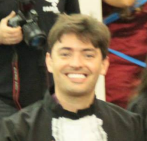
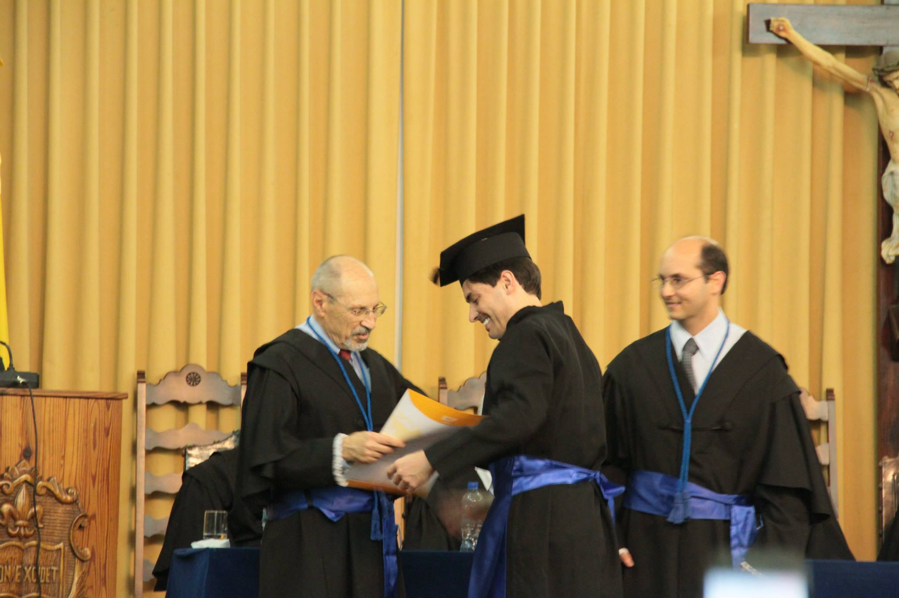
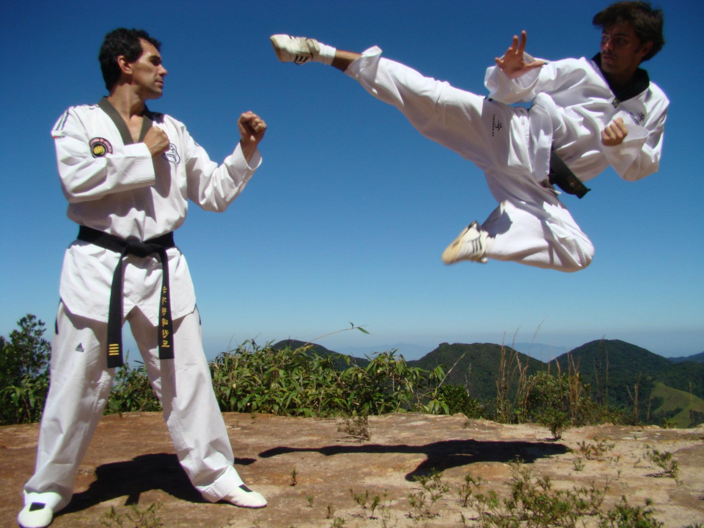

Cristiano Lopes Duarte
Filiação
Mae: Maria de Jesus Wayand Duarte
Pai: Sebastião Lopes Duarte
Formação:
Formado em Tecnólogo de Petróleo e Gás - UCP em 2014

Graduado Faixa Preta 1º Dan em Tae Kwon Do - 2004

Atualmente:
Estudando desenvolvimento de Software e desenvolvimento Web FullStack